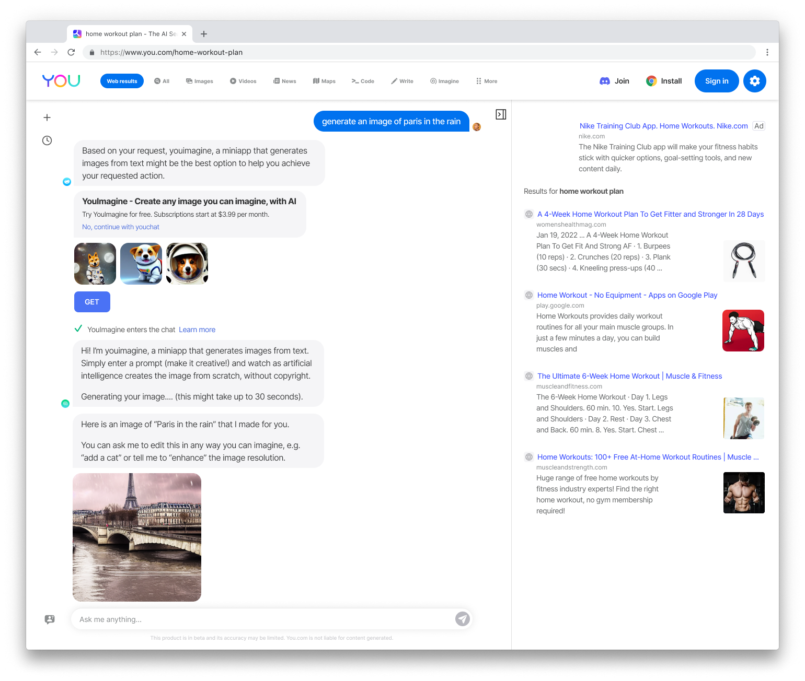

01
You.com / AI search
Making search feel more like a conversation.
You.com began as a traditional search engine with a layer of AI tools. Research made the opportunity clear: people wanted to ask follow-ups and shape their intent in conversation. I led the move to a chat-first experience with answers grounded in sources.
Open the product notes
SignalPeople wanted direct answers and an easy way to keep refining what they meant.
DecisionBring the prompt, answer, sources, and conversational context into one clear experience.
ResultChat became the product’s main experience and its direction going forward.
1M → 10MMonthly users as chat became the main experience
